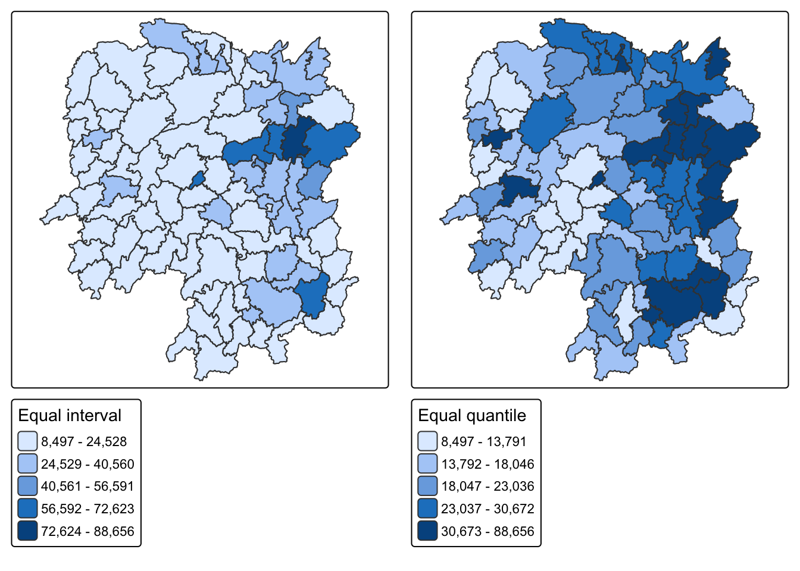
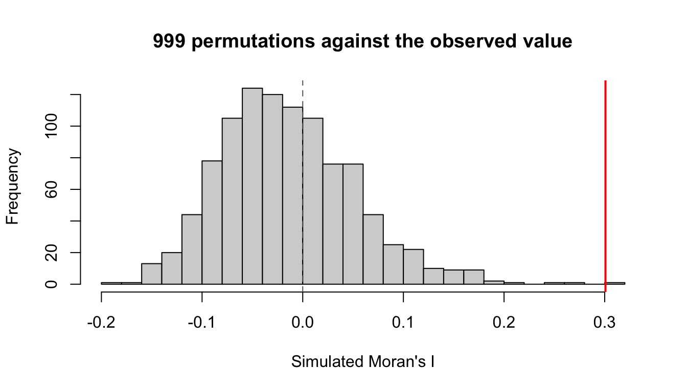
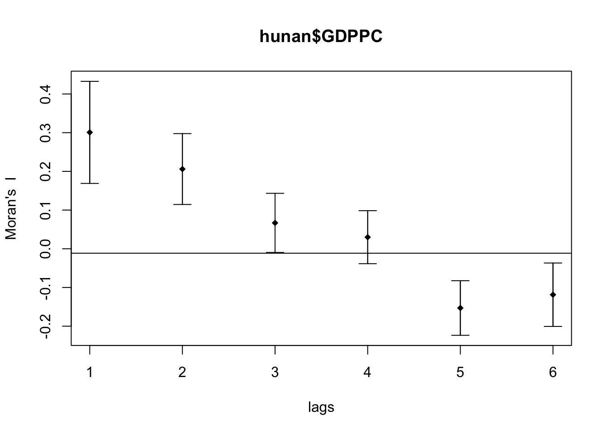
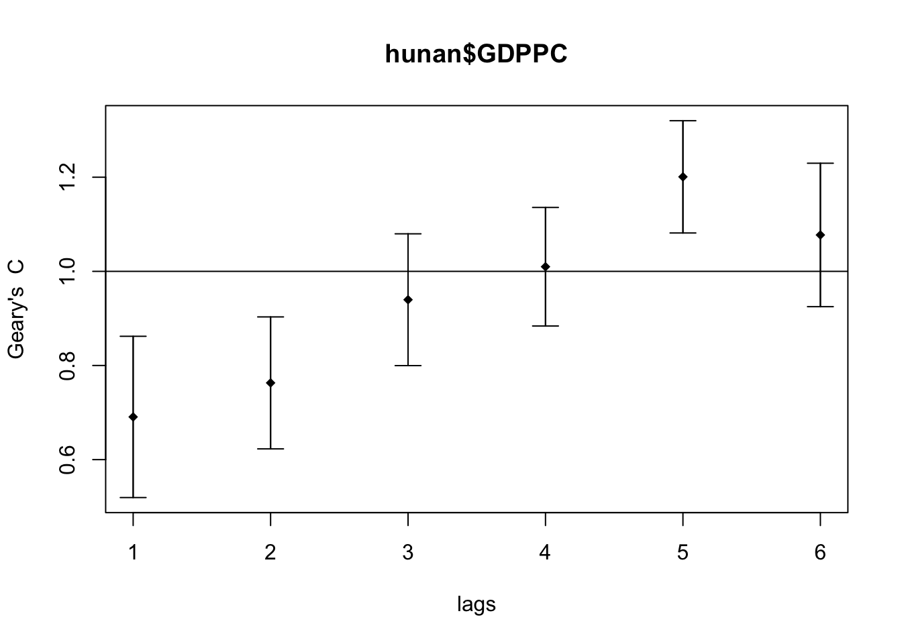

pacman::p_load(sf, spdep, tmap, tidyverse, knitr)Global Measures of Spatial Autocorrelation
HANDS-ON EXERCISE 5 / PART 01
R spdep Moran’s I Geary’s C Correlogram
This exercise follows Global Measures of Spatial Autocorrelation, in the Spatial Weights block of the course.
1. Overview
Exercise 4 built the weights matrix. This exercise finally uses it to answer a question worth asking: is Hunan’s economic development spatially clustered, or is it scattered at random across the province?
That matters because the two cases call for different policy. If wealthy counties are scattered, each one succeeded on its own terms and there is little to generalise. If they are clustered, something is spilling across county borders, and the unit of intervention is the region rather than the county.
The techniques split into two levels:
- Global measures return one number for the whole map. Moran’s I and Geary’s C answer “is there clustering anywhere”.
- Local measures return one number per county. LISA and Getis-Ord Gi* answer “clustering where”, which is the question a planner actually has.
I expected the local maps to be a more detailed version of the global result. They are not, and the gap between them turned out to be the most useful thing in this exercise.
2. The Study Area and Data
| Dataset | Description | Format |
|---|---|---|
Hunan |
County boundary layer for Hunan province, China, 88 counties | ESRI Shapefile (polygon) |
Hunan_2012.csv |
Selected local development indicators for 2012 | CSV |
Same data as Exercise 4, which is deliberate. Having already built and inspected the weights matrix for these 88 counties, I can attribute anything surprising here to the statistics rather than to the geography being unfamiliar.
The variable of interest is GDPPC, GDP per capita, which ranges from 8,497 to 88,656 with a mean of 24,405. That is better than a tenfold spread across a single province.
3. Getting Started
4. Getting the Data Into R
4.1 Importing the Shapefile
hunan <- st_read(dsn = "data/geospatial", layer = "Hunan")Reading layer `Hunan' from data source
`/Users/jedidiahasaf/Downloads/School/ISSS626/coursework-website/Hands-on_Ex/Hands-on_Ex05/data/geospatial'
using driver `ESRI Shapefile'
Simple feature collection with 88 features and 7 fields
Geometry type: POLYGON
Dimension: XY
Bounding box: xmin: 108.7831 ymin: 24.6342 xmax: 114.2544 ymax: 30.12812
Geodetic CRS: WGS 844.2 Importing the CSV
hunan2012 <- read_csv("data/aspatial/Hunan_2012.csv")4.3 Performing the Relational Join
hunan <- left_join(hunan, hunan2012, by = c("County" = "County")) %>%
select(1:4, 7, 15)5. Visualising the Distribution
Before any test, look at the map. A statistic that disagrees with the picture usually means the statistic was computed wrong.
equal <- tm_shape(hunan) +
tm_polygons("GDPPC", fill.scale = tm_scale_intervals(n = 5, style = "equal"),
fill.legend = tm_legend(title = "Equal interval")) +
tm_borders(col_alpha = 0.5)
quantile <- tm_shape(hunan) +
tm_polygons("GDPPC", fill.scale = tm_scale_intervals(n = 5, style = "quantile"),
fill.legend = tm_legend(title = "Equal quantile")) +
tm_borders(col_alpha = 0.5)
tmap_arrange(equal, quantile, asp = 1, ncol = 2)
NoteThe two classifications disagree about how many rich counties there are
Equal interval puts almost every county in the bottom class, because Changsha at 88,656 stretches the range so far that the other 87 counties are squeezed together. Equal quantile forces 20% into each class and shows a north-east cluster clearly.
Neither is wrong. Equal interval is honest about the magnitude of the gap; quantile is honest about the ranking. The reason this matters for the rest of the exercise is that Moran’s I works on deviations from the mean, and that mean of 24,405 is dragged upward by a handful of counties. Most of Hunan sits below its own provincial average.
6. Global Measures of Spatial Autocorrelation
6.1 Computing Row-standardised Weights
wm_q <- poly2nb(hunan, queen = TRUE)
rswm_q <- nb2listw(wm_q, style = "W", zero.policy = TRUE)
rswm_qCharacteristics of weights list object:
Neighbour list object:
Number of regions: 88
Number of nonzero links: 448
Percentage nonzero weights: 5.785124
Average number of links: 5.090909
Weights style: W
Weights constants summary:
n nn S0 S1 S2
W 88 7744 88 37.86334 365.9147Queen contiguity, row-standardised, as built in Exercise 4. Average of 5.09 neighbours per county.
6.2 Moran’s I Test
moran.test(hunan$GDPPC, listw = rswm_q, zero.policy = TRUE, na.action = na.omit)
Moran I test under randomisation
data: hunan$GDPPC
weights: rswm_q
Moran I statistic standard deviate = 4.7351, p-value = 1.095e-06
alternative hypothesis: greater
sample estimates:
Moran I statistic Expectation Variance
0.300749970 -0.011494253 0.004348351 Moran’s I is 0.3007 against an expected value of -0.0115 under spatial randomness. The z-score is 4.735 and p is about 1.1e-06.
So: positive spatial autocorrelation. Counties resemble their neighbours more than chance would produce. On the standard reading of Moran’s I, which runs roughly -1 to +1, 0.30 is moderate rather than overwhelming.
6.3 Monte Carlo Moran’s I
The analytical p-value assumes normality, and GDPPC is clearly skewed. A permutation test avoids that assumption entirely by shuffling the values across counties 999 times and asking where the observed value falls.
set.seed(1234)
bperm <- moran.mc(hunan$GDPPC, listw = rswm_q, nsim = 999, zero.policy = TRUE, na.action = na.omit)
bperm
Monte-Carlo simulation of Moran I
data: hunan$GDPPC
weights: rswm_q
number of simulations + 1: 1000
statistic = 0.30075, observed rank = 1000, p-value = 0.001
alternative hypothesis: greaterThe observed statistic ranks 1000 out of 1000, giving p = 0.001. No permutation of the data produced clustering as strong as the real arrangement. The conclusion survives dropping the normality assumption, which is the point of running it.
6.4 Visualising the Simulation
hist(bperm$res, freq = TRUE, breaks = 20, xlab = "Simulated Moran's I",
main = "999 permutations against the observed value")
abline(v = 0, col = "grey40", lty = 2)
abline(v = bperm$statistic, col = "red", lwd = 2)
The simulated distribution sits around zero, as it should when values are scattered at random. The observed value sits outside the whole distribution.
6.5 Geary’s C Test
geary.test(hunan$GDPPC, listw = rswm_q)
Geary C test under randomisation
data: hunan$GDPPC
weights: rswm_q
Geary C statistic standard deviate = 3.6108, p-value = 0.0001526
alternative hypothesis: Expectation greater than statistic
sample estimates:
Geary C statistic Expectation Variance
0.6907223 1.0000000 0.0073364 Geary’s C is 0.6907 against an expected 1. Values below 1 indicate positive autocorrelation, so this agrees with Moran’s I.
6.6 Monte Carlo Geary’s C
set.seed(1234)
bperm_geary <- geary.mc(hunan$GDPPC, listw = rswm_q, nsim = 999)
bperm_geary
Monte-Carlo simulation of Geary C
data: hunan$GDPPC
weights: rswm_q
number of simulations + 1: 1000
statistic = 0.69072, observed rank = 1, p-value = 0.001
alternative hypothesis: greaterp = 0.001 again.
NoteWhy run both when they agree
Moran’s I is built on cross-products of deviations from the global mean, so it responds to the overall pattern. Geary’s C is built on squared differences between neighbouring pairs, so it is more sensitive to local differences between adjacent units.
When they agree, as here, the reading is that the pattern is not an artefact of one formulation. If Moran’s I had come back positive while Geary’s C indicated no structure, that would have pointed to a broad regional gradient without sharp neighbour-to-neighbour similarity, and would have been worth chasing. Agreement is the boring outcome, but it is only boring because it was checked.
7. Spatial Correlogram
Contiguity only looks at immediate neighbours. A correlogram extends the question: how far does the similarity reach before it dies out?
7.1 Moran’s I Correlogram
MI_corr <- sp.correlogram(wm_q, hunan$GDPPC, order = 6, method = "I", style = "W")
plot(MI_corr)
print(MI_corr)Spatial correlogram for hunan$GDPPC
method: Moran's I
estimate expectation variance standard deviate Pr(I) two sided
1 (88) 0.3007500 -0.0114943 0.0043484 4.7351 2.189e-06 ***
2 (88) 0.2060084 -0.0114943 0.0020962 4.7505 2.029e-06 ***
3 (88) 0.0668273 -0.0114943 0.0014602 2.0496 0.040400 *
4 (88) 0.0299470 -0.0114943 0.0011717 1.2107 0.226015
5 (88) -0.1530471 -0.0114943 0.0012440 -4.0134 5.984e-05 ***
6 (88) -0.1187070 -0.0114943 0.0016791 -2.6164 0.008886 **
---
Signif. codes: 0 '***' 0.001 '**' 0.01 '*' 0.05 '.' 0.1 ' ' 1| Lag | Moran’s I |
|---|---|
| 1 | +0.3007 |
| 2 | +0.2060 |
| 3 | +0.0668 |
| 4 | +0.0299 |
| 5 | -0.1530 |
| 6 | -0.1187 |
ImportantThe sign flip is the finding, not the decay
I expected the correlation to decay toward zero as lag increases, and it does through lag 4. What I did not expect is that it goes negative at lags 5 and 6.
Decay to zero would mean influence simply fades with distance. Going negative means something stronger: counties five or six steps apart are systematically dissimilar. That is the signature of a single dominant cluster rather than a smooth gradient. Once you walk five counties away from the rich north-east, you are reliably in the poor periphery, so the correlation inverts.
A gradient across the province would have produced a slow decay that stayed positive. The negative tail says Hunan has a core and a periphery, and the boundary between them is crossed at about four steps.
7.2 Geary’s C Correlogram
GC_corr <- sp.correlogram(wm_q, hunan$GDPPC, order = 6, method = "C", style = "W")
plot(GC_corr)
Geary’s C mirrors it, rising above 1 at the longer lags, which is the same statement in the opposite direction.
8. Additional Exploration: Does the Choice of Weights Change Moran’s I?
Everything above used queen contiguity. Exercise 4 built four different weighting schemes, and I was left wondering how much of Moran’s I is the data and how much is the matrix.
First the distance-based neighbours, which need a cut-off large enough that no county is left isolated.
coords <- st_coordinates(st_centroid(st_geometry(hunan)))
k1 <- knn2nb(knearneigh(coords))
dmax <- max(unlist(nbdists(k1, coords, longlat = TRUE)))
round(dmax, 2)[1] 61.81
WarningPass coordinates, not geometry
My first attempt passed st_centroid() output straight into knearneigh(), an sfc object rather than a coordinate matrix, and the maximum first-neighbour distance came back as 0.60 instead of 61.81. The longlat = TRUE argument is silently ignored, so spdep measures in degrees as though they were planar units.
It does not error. It produces a perfectly well-formed weights matrix that is completely wrong. I made this exact mistake in Exercise 4, wrote it up, and made it again here. What saved me was the habit the first one left behind: look at the number and ask whether 0.6 km is plausible for Chinese counties.
Now the four schemes.
d62 <- dnearneigh(coords, 0, dmax, longlat = TRUE)
wm_r <- poly2nb(hunan, queen = FALSE)
k6 <- knn2nb(knearneigh(coords, k = 6))
schemes <- list(Queen = wm_q, Rook = wm_r, `knn (k=6)` = k6, `Fixed 62km` = d62)
map_dfr(names(schemes), function(nm) {
lw <- nb2listw(schemes[[nm]], style = "W", zero.policy = TRUE)
m <- moran.test(hunan$GDPPC, lw, zero.policy = TRUE)
tibble(Scheme = nm,
`Avg neighbours` = round(mean(card(schemes[[nm]])), 2),
`Moran's I` = round(unname(m$estimate[1]), 4),
z = round(unname(m$statistic), 3),
p = format.pval(m$p.value, digits = 3))
}) %>% kable()| Scheme | Avg neighbours | Moran’s I | z | p |
|---|---|---|---|---|
| Queen | 5.09 | 0.3007 | 4.735 | 1.09e-06 |
| Rook | 5.00 | 0.3084 | 4.810 | 7.53e-07 |
| knn (k=6) | 6.00 | 0.3429 | 6.429 | 6.41e-11 |
| Fixed 62km | 3.64 | 0.4210 | 5.388 | 3.56e-08 |
| Scheme | Avg neighbours | Moran’s I | z | p |
|---|---|---|---|---|
| Queen | 5.09 | 0.3007 | 4.735 | 1.09e-06 |
| Rook | 5.00 | 0.3084 | 4.810 | 7.53e-07 |
| knn (k=6) | 6.00 | 0.3429 | 6.429 | 6.41e-11 |
| Fixed 62 km | 3.64 | 0.4210 | 5.388 | 3.56e-08 |
NoteThe direction is robust. The magnitude is not.
Every scheme agrees that autocorrelation is positive, and the weakest p-value is still about 1e-06. That conclusion is safe.
Moran’s I itself ranges from 0.30 to 0.42, a swing of 40% of the lower value. Reporting “Moran’s I for Hunan GDPPC is 0.42” without naming the matrix would not be reproducible by someone who reasonably chose queen contiguity.
The mechanism is the neighbour count. The fixed-distance scheme has the fewest neighbours at 3.64, so each county is compared against a tighter and nearer set, and near neighbours are more alike. Fewer and closer neighbours means a higher measured index. Part 02 finds the same sensitivity in the local statistics, where it decides whether Hunan has any cold spots at all.
The rule I am taking from this: treat the ranking of places as more trustworthy than the absolute value of any index, and state the weights specification alongside the statistic.
9. What I Take Away
Hunan’s development is spatially clustered, and the evidence is not marginal. Moran’s I of 0.3007 against an expected -0.0115 gives z = 4.735 and p near 1e-06, and the permutation test puts the observed value outside all 999 simulations. Geary’s C agrees from a different formulation. The conclusion survives dropping the normality assumption, which is the reason to run the Monte Carlo version at all.
The correlogram’s negative tail was worth plotting. Decay to zero would mean influence simply fades with distance. Turning negative at lags 5 and 6 means counties that far apart are systematically dissimilar, which is the signature of a core and a periphery rather than a smooth gradient. The boundary is crossed at about four steps.
The direction is robust, the magnitude is not. Moran’s I moves between 0.30 and 0.42 across four reasonable weighting schemes. Reporting the number without naming the matrix that produced it would not be reproducible. Fewer and nearer neighbours means a higher index, every time.
And a global statistic is an average over the whole map. It says clustering exists somewhere. It cannot say where, it cannot say whether the clustering is in the rich counties or the poor ones, and it cannot say how much of the province participates. Part 02 takes the same data apart county by county, and the answer turns out to be narrower than this number suggests.